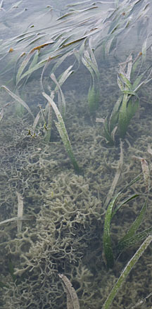
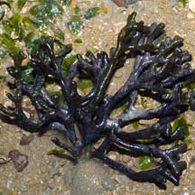
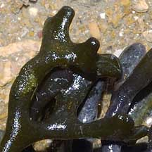
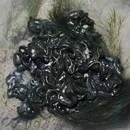
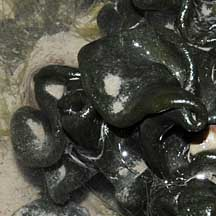
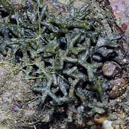
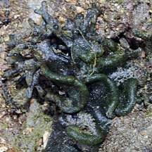

|
|
| green seaweeds text index | photo index |
| Seaweeds > Division Chlorophyta |
| Codium
green seaweed Codium sp.* Family Codiaceae updated Feb 2020 Where seen? This spongy, velvety green seaweed is sometimes seen on our Southern shores. Branching forms sometimes blooms among seagrasses near reefs, e.g., at Pulau Semakau. Features: Spongy but firm, texture velvety smooth. Commonly seen on the intertidal is Codium geppiorum which forms a cluster of thick, cylindrical 'stems' (6-8 cm) with rounded, knobbly tips. May be a compact ball of short branches, or a looser clump of longer branches. Colour olive green to dark green. Others, like Codium arabicum, forms encrusting layers on hard surfaces, often forming blobs with folds. Colour black or dark green to olive. According to AlgaeBase, there are more than 140 current Codium species. Lumpy blobby Codium green seaweed may be confused with Puffy brown seaweed (Colpomenia sinuosa) which is golden brown. Role in the habitat: Some Codium species are eaten by sea turtles. Invasive Codium: Some species of Codium are considered invasive alien introduced species in temperate shores. As these invasive Codium species take root, they displace the native kelp seaweeds and the marine life associated with these seaweeds. These invasive species are believed to have been introduced via attachment to ship hulls, or oyster shells, as fouling organisms in drag nets and packing material for fishery products. Human uses: Some species are used as animal feed and eaten by people. In Korea, they are harvested fresh from the wild and sold in local markets. They are also used as insect repellant. They are reported to have anti-bacterial and anti-tumor properties. |
|
 Pulau Semakau, Feb 12 |
 Tuas, Apr 05  |
 Labrador, Apr 10  |
 Pulau Biola, Dec 09 |
 Pulau Biola, Dec 09 |
*Species are difficult to positively identify without close examination of internal parts.
On this website, they are grouped by external features for convenience of display.
| Codium green seaweeds on Singapore shores |
On wildsingapore
flickr
|
| Other sightings on Singapore shores |
| Codium
recorded for Singapore Pham, M. N., H. T. W. Tan, S. Mitrovic & H. H. T. Yeo, 2011. A Checklist of the Algae of Singapore.
|
Links
References
|